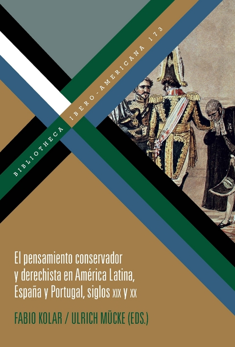
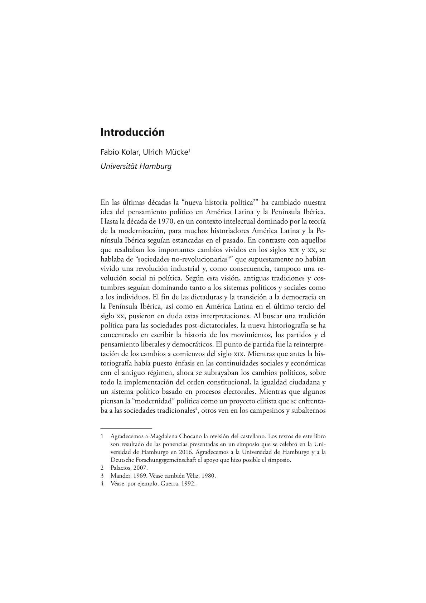
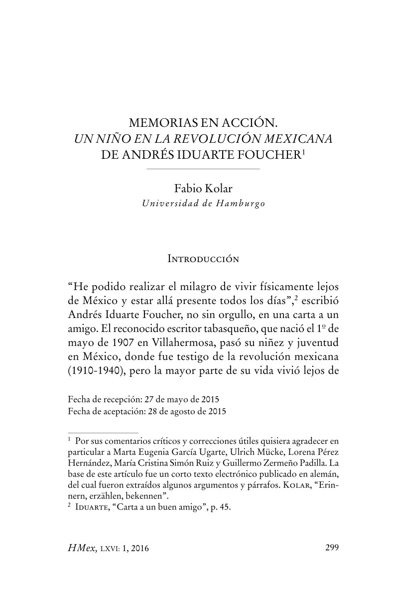

Books
Kolar, Fabio and Mücke, Ulrich (eds.) (2019) El pensamiento conservador y derechista en América Latina, España y Portugal, siglos XIX y XX. Madrid and Frankfurt: Iberoamericana Vervuert (Biblioteca Ibero-Americana).
Articles
Kolar, Fabio and Mücke, Ulrich (2019) ‘Introducción’, in Kolar, Fabio and Mücke, Ulrich (eds.) El pensamiento conservador y derechista en América Latina, España y Portugal, siglos XIX y XX. Madrid and Frankfurt: Iberoamericana Vervuert (Biblioteca Ibero-Americana), pp. 7-36.
Kolar, Fabio (2016) ‘Memorias en acción. ‘Un niño en la Revolución Mexicana’ de Andrés Iduarte Foucher’, Historia Mexicana, 66(1), pp. 299-357.
